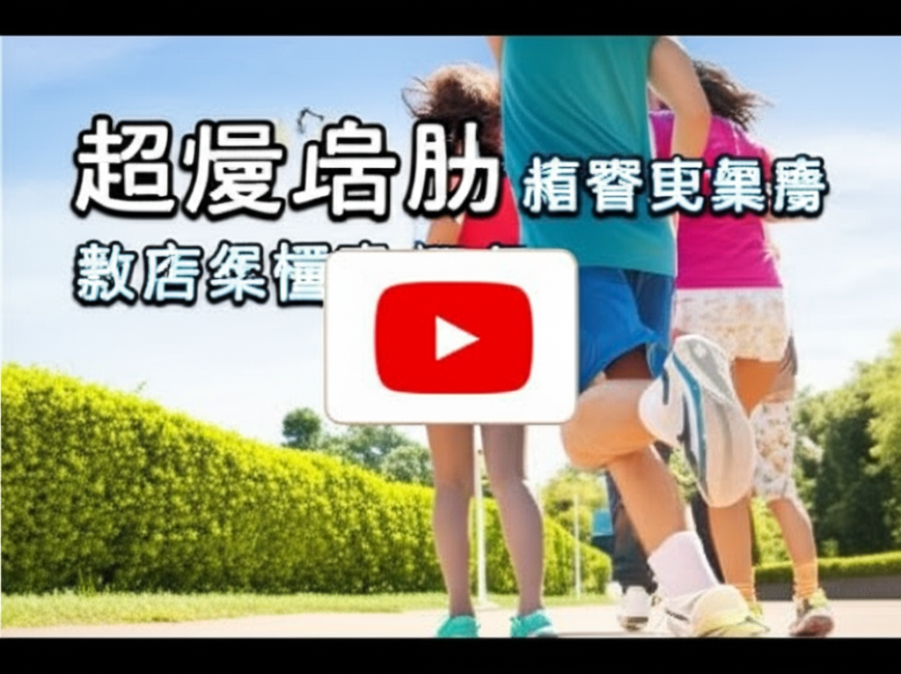

# 超慢跑熱潮：從新聞、購物到運動中心，全民一起動起來！
## 引言
近年來，「超慢跑」成為一股健康風潮，從新聞媒體的報導、購物網站的推薦到運動中心的課程，都可見其身影。究竟超慢跑為何如此受歡迎？本文將分析近期相關資訊，探討這股熱潮的成因以及其背後的健康價值。資料來源涵蓋 momo 購物網、Yahoo 奇摩新聞、YouTube、優活健康網、早安健康、天下雜誌、台視新聞及 vocus 等平台。
## 主體內容
### 第一點：媒體與資訊平台的推波助瀾
各大新聞媒體和健康資訊平台對於超慢跑的報導，無疑是這股熱潮的重要推手。Yahoo奇摩新聞推出健康專題，優活健康網和早安健康等網站也分享相關知識，讓民眾更容易接觸到超慢跑的資訊。台視新聞報導甲狀腺低下患者的運動建議，也提及超慢跑是低強度運動的選項之一。這些報導不僅普及了超慢跑的概念，也使其成為民眾心目中健康的運動選擇。
### 第二點：購物網站的商品推廣與便利性
momo購物網等電商平台大力推廣超慢跑相關商品，例如平衡墊、瑜珈墊以及專用的超慢跑墊等。這些商品不僅提升了運動的舒適度，也降低了運動傷害的風險。此外，momo購物網提供超商取貨的便利服務，更讓民眾能輕鬆購買所需的運動器材，進一步促進了超慢跑的普及。
### 第三點：運動中心與社群的參與
新北市新莊國民運動中心推出春季體適能優惠，吸引民眾參與運動。此外，vocus等社群平台也有使用者分享超慢跑的初體驗，紀錄並分享自己的運動歷程，透過社群的力量，讓更多人認識並嘗試超慢跑。YouTube 上也有運動教學影片，例如舒穆祿梅緋／芥川組的15分鐘超慢跑教學，讓初學者也能輕鬆入門。
## 結論
超慢跑的興起，是多方因素共同作用的結果。媒體的報導、購物網站的推廣、運動中心的參與以及社群的分享，都讓更多人認識到超慢跑的優點。超慢跑不僅是一種簡單易學的運動方式，更是一種強調健康與樂活的生活態度。隨著人們對健康的重視程度日益提高，相信超慢跑的熱潮還將持續下去。